We are provided with a dataset from Kaggle for this project. Our goal is to build a classifier given comment, predicting which subreddit category it belongs namely among Machine Learning, Artificial Intelligence, and Data Science
This dataset contains information about the top 1000 posts from three popular Reddit communities related to data science, namely Machine Learning, Artificial Intelligence, and Data Science.
It has two datasets:
1. "Top_Posts.csv": This dataset contains details about the all-time top post of subreddits related to Data Science. The former contains 2987 rows and 9 columns.
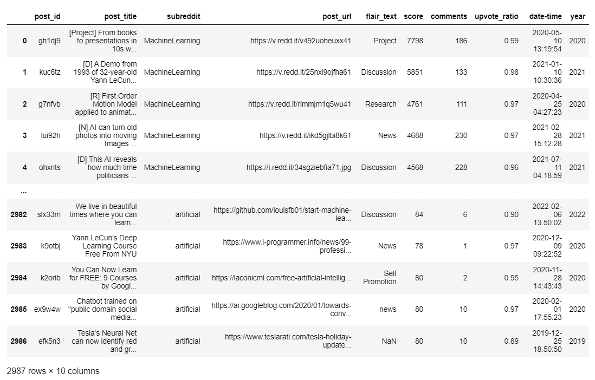2. "Top_Posts_Comments.csv": This dataset contains textual data of comments in all-time Top posts of subreddits. The former contains 223,174 rows and 2 columns.
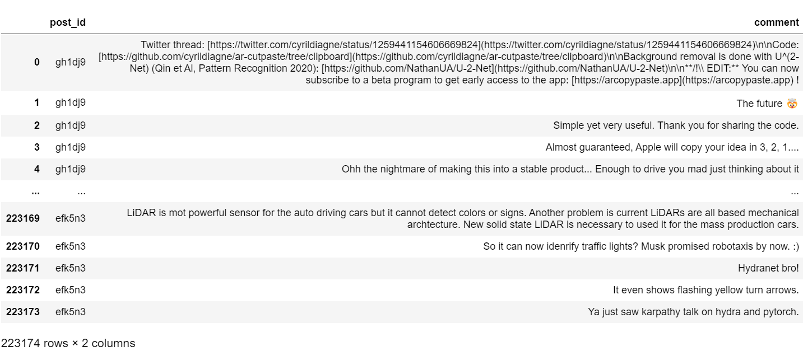Removed Special characters like punctuations, new line(\n), commas, @, #,….., and also removed urls from Top_Posts_Comments comment coloumn.
After removing special charecters and urls into column name comment1:
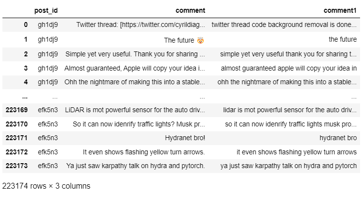
Merged the Top_Posts and Top_Posts_Comments datasets, by considering the column “post_id” as common column. The merged dataset contain, subreddit column from Top_Posts and all the columns from Top_Posts_Comments.
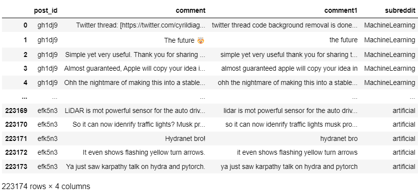In this project, we'll compare various models.-- KNN classifier, decision tree classifier, Random Forest Classifier, Naïve bayes classifier(MultinomialNB and BernoulliNB).
We splitted the data into 3 parts: train, dev, and test datasets:
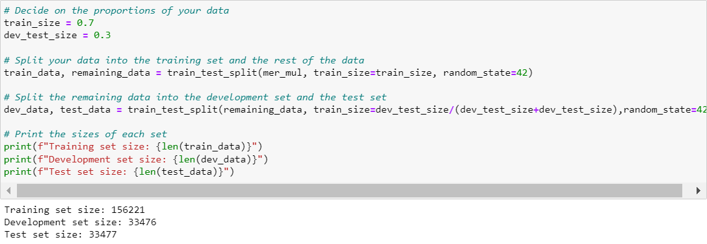CountVectorizer is used to convert a collection of text documents to a matrix of token (word) counts. It takes a corpus of text as input, tokenizes the text into individual words, and then counts the number of times each word occurs in each document. The resulting matrix can then be used as input to a machine learning algorithm.
The specific use of CountVectorizer in each model may vary slightly. For example, in MultinomialNB, CountVectorizer is typically used to convert text data into a document-term matrix, where each row represents a document and each column represents a term (word), with the values indicating the frequency of each term in each document. In DecisionTreeClassifier and Random Forest, CountVectorizer is often used as a pre-processing step to convert text data into a numerical representation that can be used as input to the decision tree or random forest algorithm. In KNN, CountVectorizer is used to convert text data into a numerical representation that can be used to calculate distances between documents.
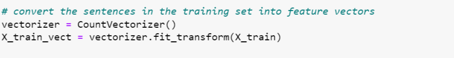The k-nearest neighbors algorithm, also known as KNN or k-NN, is a non-parametric, supervised learning classifier, which uses proximity to make classifications or predictions about the grouping of an individual data point. In the case of classification, the KNN algorithm assigns a class to a given input sample by looking at the K-nearest neighbors to that sample in the training set, where the value of K is a hyperparameter. The class assigned to the input sample is determined by majority vote among its K-nearest neighbors. The KNN algorithm uses a distance metric such as Euclidean distance or Manhattan distance to measure the distance between samples.
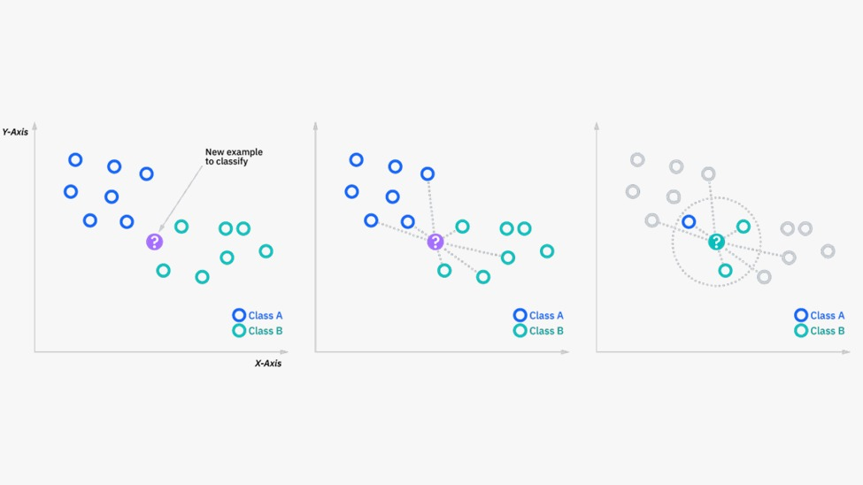for test dataset accuracy is:
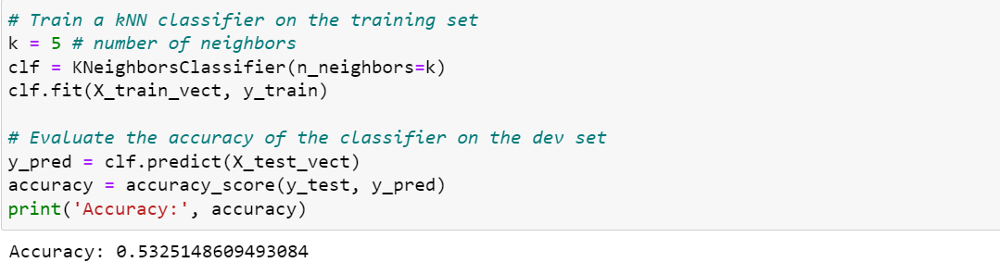
A decision tree is a type of supervised machine learning algorithm that is commonly used for classification or regression tasks. It involves creating a tree-like model of decisions and their possible consequences, represented by nodes and branches, to predict the class or value of an input. The tree is built recursively by selecting the best feature to split the data and optimizing the split based on a criterion such as Gini impurity or entropy, (here by default it is Gini), with the goal of maximizing the information gain or reducing the impurity of the subsets. The decision tree is a simple yet powerful model that is easy to understand and interpret, and can handle both categorical and numerical features.
Gini Index is a powerful measure of the randomness or the impurity or entropy in the values of a dataset. Gini Index aims to decrease the impurities from the root nodes (at the top of decision tree) to the leaf nodes (vertical branches down the decision tree) of a decision tree model.
Formula of Gini Index
where,
‘pi’ is the probability of an object being classified to a particular class.
While building the decision tree, we would prefer to choose the attribute/feature with the least Gini Index as the root node.for test dataset accuracy is :
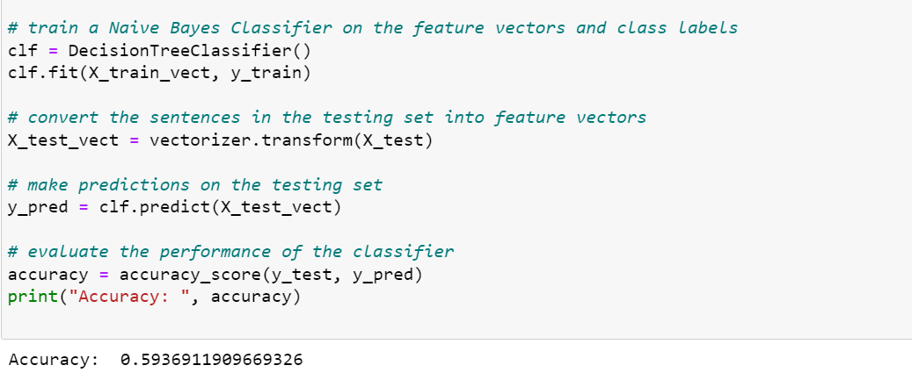Random Forest algorithm is a type of ensemble learning algorithm that combines multiple decision trees to create a forest of decision trees. Each decision tree in the forest is trained on a randomly sampled subset of the training data, and they vote to make the final prediction. This helps to reduce overfitting and increase the accuracy of the model. Random Forest algorithm can be used for both classification and regression tasks.
for test dataset the accuracy is :
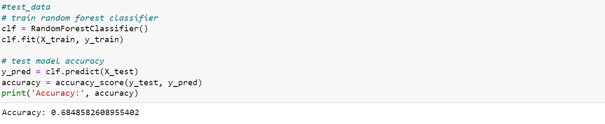(Reference [1])
Naive Bayes is not a single algorithm but a group of algorithms where all of these algorithms share a common principle, i.e. every pair of features being classified must be independent of each other. Naive Bayes is a basic Bayesian classifier. It’s simple, fast, and widely used.
The Naive Bayes is a collection of three algorithms: MultinomialNB, BernoulliNB, GaussianNB
(Reference [1])
MultinomialNB implements the naive Bayes algorithm for multinomially distributed data, and is one of the two classic naive Bayes variants used in text classification (where the data are typically represented as word vector counts),The distribution is parametrized by vectors for each class , where is the number of features (in text classification, the size of the vocabulary) and is the probability of feature appearing in a sample belonging to class .
where, is the number of times feature appears in a sample of class in the training set , and is the total count of all features for class .
for test datset accuracy is
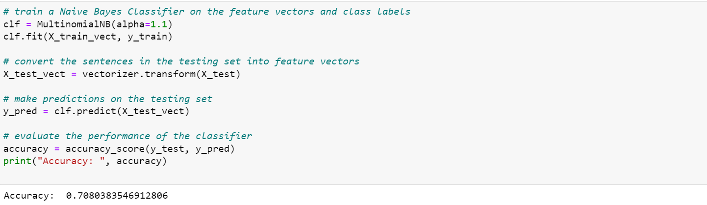(Reference [1])
BernoulliNB implements the naive Bayes training and classification algorithms for data that is distributed according to multivariate Bernoulli distributions; i.e., there may be multiple features but each one is assumed to be a binary-valued (Bernoulli, boolean) variable. Therefore, this class requires samples to be represented as binary-valued feature vectors; if handed any other kind of data, a BernoulliNB instance may binarize its input (depending on the binarize parameter).
The decision rule for Bernoulli naive Bayes is based on
which differs from multinomial NB’s rule in that it explicitly penalizes the non-occurrence of a feature that is an indicator for class , where the multinomial variant would simply ignore a non-occurring feature.
for test dataset accuracy is :
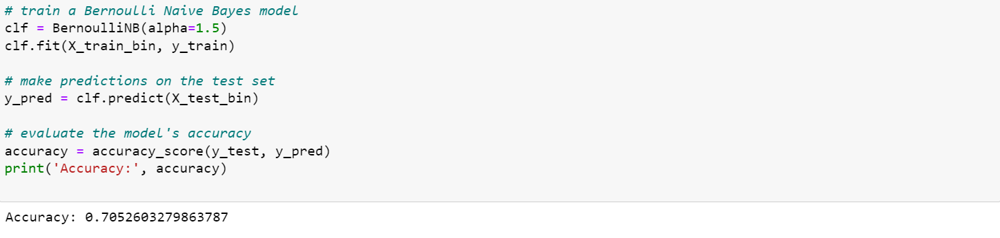Lemmatization is the process of reducing a word to its base or dictionary form, known as a lemma. It involves analyzing the morphological structure of the word and its context to determine its base form.
The goal of lemmatization is to reduce a word to its root form, also called a lemma. For example, the verb "running" would be identified as "run."
After using lemmatization on MultinomialNB the accuracy of test dataset is
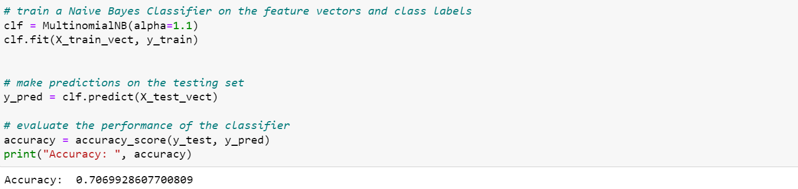-> Removed special charecters and changed the dataset Review column into lower case
-> Merged the dataset
-> Here the dataset is divide into 3 parts, train data, dev data, test data
-> Evaluated different models on given dataset:KNN classifier, decision tree classifier, Random Forest Classifier, Naïve bayes classifier(MultinomialNB and BernoulliNB) for Hyper parameter tuning checked differen k values in Knn and for different aplha values in Naive Bayes classification
As this id large file and has rows 200,000, it took more time while executing random forest, decision tree, knn.
[1] https://scikit-learn.org/stable/modules/naive_bayes.html#multinomial-naive-bayes
[3] https://iq.opengenus.org/bernoulli-naive-bayes/
[4] https://medium.com/@nansha3120/bernoulli-naive-bayes-and-its-implementation-cca33ccb8d2e
[5] https://www.ibm.com/topics/knn
[6]https://scikit-learn.org/stable/modules/neighbors.html#classification
[10] https://scikit-learn.org/stable/modules/tree.html
[11] https://scikit-learn.org/stable/modules/generated/sklearn.preprocessing.Binarizer.html
[13] https://scikit-learn.org/stable/modules/generated/sklearn.ensemble.RandomForestClassifier.html
[14] https://scikit-learn.org/stable/modules/generated/sklearn.tree.DecisionTreeClassifier.html
[14] https://scikit-learn.org/stable/modules/naive_bayes.html#multinomial-naive-bayes